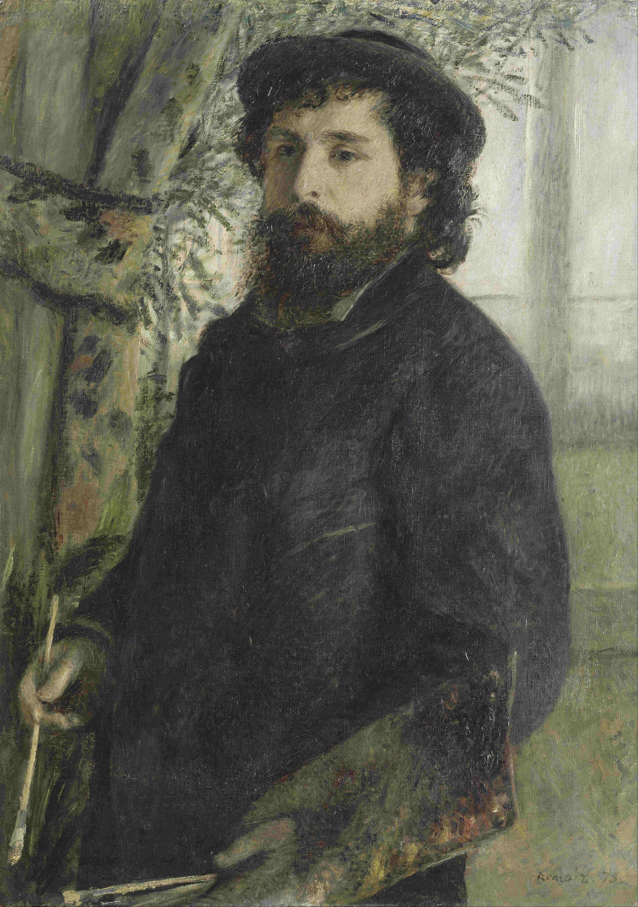

Claude Monet, Pierre-Auguste Renoir, 1875.
Oscar-Claude Monet
1840–1926
Oscar-Claude Monet was a famous French painter in Paris in the late 17th century and the start of the early 18th century. Monet was the leader in the Impressionist art movment, a movement that was concerned with capturing light and natural forms. He was well known for his interest in painting in the open air and capturing natural light, Monet would later bring this technique to one of its most famous pinnacle moments with his series paintings; in which his observations of the same subject, viewed at various times of the day, were captured in numerous sequences. Masterful with his use of color, and as a painter of light and atmosphere, his later work often achieved a impeccable degrees of abstraction, and this has recommended him to subsequent generations of abstract painters. Many others who are well known painters such as: Vincent Van Gogh, Georges Seurat, Edgar Degas, and Paul Cézanne.